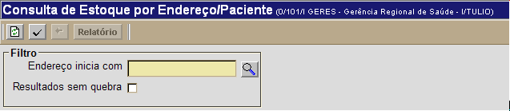
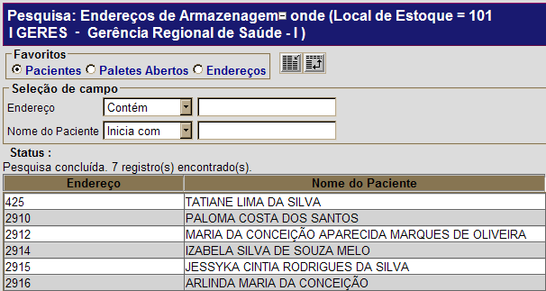

Consulta de Estoque por Paciente [ Voltar ] Para acessar a tela, vá ao menu "Estoque" na tela principal e clique em "Consulta de Estoque por Paciente". 
Após clicar no link, a seguinte tela será exibida: 
1º Passo: informe os dados do paciente que deseja consultar.
 Certifique-se de escolher o favorito de pesquisa Pacientes (localizado no topo da tela - ver imagem acima) para restringir os resultados a endereços específicos a um paciente. Para mais informações sobre outros recursos
e
funcionalidades da pesquisa, favor ver o manual Introdução
ao Sistema.
2° Passo: clique no botão  para processar a pesquisa.
Os resultados correspondentes serão exibidos na parte inferior da tela.
Para visualizar o relatório de estoque, clique no botão para processar a pesquisa.
Os resultados correspondentes serão exibidos na parte inferior da tela.
Para visualizar o relatório de estoque, clique no botão  . .
|
 [Procurar] para selecioná-lo a partir de uma lista que contém todos os pacientes com ação judicial.
[Procurar] para selecioná-lo a partir de uma lista que contém todos os pacientes com ação judicial.